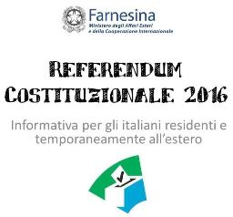

|
ISTITUZIONE DI UN SERVIZIO DI PATRONATO IN NUOVA ZELANDA – PUNTO INAS (MELBOURNE)
Il Comites Wellington si e' fatto parte attiva da piu` di un anno per sollecitare un servizio di patronato in Nuova Zelanda. Dato il numero ristretto di possibili clienti, nessun patronato tra i vari che sono stati consultati, si e` dichiarato disponibile a sostenere la spesa di costituire e registrare una nuova associazione. Tuttavia l’INAS (Istituto Nazionale Assistenza Sociale) di Melbourne e` disponibile ad operare tramite un collaboratore volontario locale e creare un “Punto Inas” al quale rivolgersi per ottenere qualsiasi tipo di informazione in materia di Welfare. Ciro Fiorini, National Director, INAS Australia, ha indicato: “la procedura che seguiremo per creare un punto di intervento Inas: · identificare un volontario al quale sarà richiesto di firmare un contratto di collaborazione con l’Inas al fine di tutelare lui stesso verso il servizio che darà all’assistito · invio di un corso di formazione al candidato per acquisire un concetto generale sul sistema previdenziale italiano · io stesso sarò il punto di riferimento per il candidato per qualsiasi tipo di informazione · bisognerà identificare la tipologia degli interventi al fine di poter fornire una formazione mirata a soddisfare le richieste · al candidato verranno date delle schede da seguire per gli interventi più comuni. Se non sbaglio al momento vengono pagate in New Zeland circa 900 pensioni. Io ritengo che al volontario non necessiterà più di un’ora alla settimana. Non possiamo dare rimborso a quota fissa ma senz’altro se il progetto avrà un riscontro verrà dato un contributo annuale al candidato o all’associazione che rappresenta.” In pratica, la responsabilita` di fornire informazioni corrette all’utente e la gestione delle pratiche sara` dell’INAS di Melbourne; il collaboratore dovra` ascoltare le varie richieste, fornire le carte da riempire, e inviare a Melbourne le pratiche che necessitano di informazioni particolari. Il contributo annuale di cui parla Fiorini si riferisce solo alle pratiche che richiedono una procedura, non alla semplice richiesta di informazioni da parte degli utenti del servizio. Il “Punto INAS Nuova Zelanda” verrebbe avviato in via sperimentale, per un periodo definito (6 ~ 12 mesi). Lo stesso Dr Fiorini sara` disponibile a fare un po’ di formazione al possibile candidato, e fornire una base informatica per comunicare con l’ufficio di Melbourne (PC, Stampante, internet). Le persone interessate possono rivolgersi direttamente al Dr Fiorini: melbourne@inas.com.au Ph. +61-3 9480 3094 Fax. +61-3 9480 5813 Oppure contattare il Comites: wilma.laryn@comitesnz.com Per celebrare il 71esimo anniversario della nostra Repubblica l'Ambasciata Italiana, in collaborazione con le Societá Dante Alighieri di Christchurch e Auckland, é lieta di offrire alla nostra comunitá italiana un concerto del maestro Domenico Nordio. I recital sono ad ingresso gratuito sia a Christchurch che ad Auckland. Troverete orari e localitá nelle locandine qui sotto. Vi aspettiamo numerosi!
Il 21 Luglio 2016 l'Onorevole Marco Fedi ha presentato una interrogazione parlamentare destinata al Ministero degli Affari Esteri e al Ministero del Lavoro. La finalità dell'interrogazione era di conoscere "quali urgenti iniziative di competenza intendano adottare i Ministri affinché sia ripreso l'iter procedurale e normativo per la ratifica dell'accordo di sicurezza sociale tra Italia e Nuova Zelanda".
L'8 Novembre 2016 l'allora Ministro degli Affari Esteri Paolo Gentiloni ha risposto all'interrogazione dell'On. Fedi. Nella sua risposta l'ex Ministro ha fornito alcune ragioni per la mancata ratifica dell'accordo e ha assicurato che "la preparazione di un nuovo accordo di sicurezza sociale rispondente al quadro normativo attuale sarà adeguatamente considerata in sede di ridefinizione della lista dei Paesi con i quali avviare i negoziati per la conclusione di nuove intese". Noi del Comites Wellington abbiamo considerato estremamente deludente la risposta fornita dall'ex Ministro Gentiloni. Il 23 Dicembre abbiamo scritto una lettera all'On. Fedi esortandolo a fare pressioni verso il Ministro degli Affari Esteri per impegnarsi a breve termine a favore della Comunità di Italiani in Nuova Zelanda. Qui potete scaricare i documenti:

Elettori residenti all’estero ed iscritti nell’AIRE
Gli elettori residenti all’estero ed iscritti nell’AIRE (Anagrafe degli Italiani Residenti all’Estero) riceveranno come di consueto il plico elettorale al loro indirizzo di residenza. Qualora l’elettore non lo ricevesse potrà sempre richiederne il duplicato all’Ufficio consolare di riferimento. Elettori temporaneamente all’estero. Gli elettori italiani che per motivi di lavoro, studio o cure mediche si trovano temporaneamente all’estero per un periodo di almeno tre mesi (per esempio chi è in Nuova Zelanda con un WHV) potranno partecipare al voto per corrispondenza organizzato dagli uffici consolari italiani, ricevendo la scheda al loro indirizzo all’estero. Per partecipare al voto all’estero, tali elettori dovranno far pervenire al comune d’iscrizione nelle liste elettorali un’apposita opzione entro il 2 Novembre 2016. Il modulo si può scaricare qui e può essere inviato per posta, telefax, posta elettronica anche non certificata, oppure fatta pervenire a mano al Comune anche da persona diversa dall’interessato (nel sito www.indicepa.gov.it sono reperibili gli indirizzi di posta elettronica certificata dei comuni italiani). Elettori residenti all’estero ed iscritti nell’AIRE ma temporaneamente in Italia Chi, essendo iscritto nell’AIRE, intende votare in Italia, dovrà far pervenire all’Ufficio Consolare competente per residenza (Ambasciata o Consolato) un’apposita dichiarazione (vedasi fac-simile) su carta libera che riporti: nome, cognome, data e luogo di nascita, luogo di residenza, indicazione del comune italiano d'iscrizione all'anagrafe degli italiani residenti all'estero, l'indicazione della consultazione per la quale l'elettore intende esercitare l'opzione. La dichiarazione deve essere datata e firmata dall'elettore e accompagnata da fotocopia di un documento di identità dello stesso e può essere inviata per posta, telefax, posta elettronica anche non certificata, oppure fatta pervenire a mano all’Ufficio Comnsolare, anche tramite persona diversa dall’interessato, entro l'8 ottobre 2016, con possibilità di revoca entro lo stesso termine. Si rimanda all'Albo Consolare dell'Ambasciata per informazioni più dettagliate e eventuali aggiornamenti.  Il 19 settembre 2016 si è insediato il nuovo Ambasciatore in Nuova Zelanda, S.E. Fabrizio Marcelli. Riportiamo di seguito il suo messaggio di benvenuto:
Cari connazionali e amici dell’Italia, assumo con grande piacere le funzioni di Ambasciatore d’Italia in Nuova Zelanda. Sebbene si tratti di due Paesi agli antipodi, Italia e Nuova Zelanda sono accomunate da alcune caratteristiche. L’orografia, una natura variegata, l’impegno a favore della pace nell’affermazione dei diritti umani tramite un’attiva partecipazione nell’ambito delle Nazioni Unite, l’amore per la cultura. Purtroppo siamo anche accomunati dalla vulnerabilità agli eventi catastrofici, come dimostrato dai terremoti che hanno colpito Christchurch ed Amatrice. Spero durante il mio mandato di riuscire ad incrementare ulteriormente i gia’ eccellenti rapporti fra i due Paesi e di fornire servizi efficienti alla crescente comunità italiana in Nuova Zelanda e nelle altre isole del Pacifico di accreditamento secondario. Vi invito a contribuire con idee, iniziative e suggerimenti alla mia missione. Cordialmente Fabrizio Marcelli Wellington, 19 settembre 2016 Radio Ondazzurra ha dato il via ai programmi domenica 11 settembre 2016, trasmettendo da Planet FM 104.6.
Radio Ondazzurra è la nuova radio in lingua italiana promossa dal Comites e realizzata con fondi che il MAECI (Ministero Affari Esteri Cooperazione Internazionale) ha reso disponibili a fine 2015 per iniziative che riguardano i nuovi flussi si emigrazione. Trasmetterà ogni domenica alle 11:20am per mezz'ora. Il programma può essere ascoltato a Auckland in radio su 104.6FM oppure in streaming sul sito di Planet FM 104.6. E arrivato il Cinema Italiano Festival
Finally Italians, Kiwis, and lovers of Italian culture have an opportunity to enjoy the very best that Italian Cinema has to offer. ‘We want this festival of Cinema to be a premiere cultural event all over New Zealand… and we look forward to getting Italians and Kiwis to laugh, cry and be amazed together.’ Paolo Rotondo, Artistic director Paolo Rotondo and Renee Mark have put together a superb offering of new films and return hits from Italy’s dynamic film industry. With the support of The Comites, the Italian Chamber of Commerce and the Italian Ambassador to New Zealand - Carmello Barbarello and the following sponsors Non Solo Pizza, Peroni, Studio Italia, San Pellegrino, Vigneti Zabu, Banfi, Carpineto, Solerno, La Bella Italia, Scopa, Davines, MOR, EDIT., Boffi and Giapo we will present a stylish and high-quality selection of films that is worthy of ‘MADE IN ITALY’. We need your support to ensure this initiative kicks off in the best possible style. Please become a Member of the Festival, like us on Facebook and Instagram, follow us on our Blog and attend. Ci vediamo al cinema. Instagram - @italianfilmsnz Facebook – Cinema Italiano Festival NZ Website – www.cinemaitalianonz.com  "Dove siamo nel mondo" è un servizio del Ministero degli Affari Esteri che consente agli italiani che si recano temporaneamente all'estero di segnalare i propri dati personali al fine di permettere all'Unità di Crisi, nell'eventualità che si verifichino situazioni di grave emergenza, di pianificare con maggiore rapidità e precisione interventi di soccorso.
Questo servizio è spesso poco conosciuto dagli italiani, eppure potrebbe essere di grande utilità, particolarmente in un paese come la Nuova Zelanda dove ci sono molti visitatori italiani, sia turisti che con WHV, e dove sono frequenti i terremoti anche di grande intensità. E' possibile registrarsi a questo servizio sia su www.dovesiamonelmondo.it che utilizzando la app per smartphone "Unità di Crisi - Farnesina" (recentemente aggiornata, vedi comunicato della Farnesina). Il prossimo appuntamento per la rilevazione delle impronte digitali a Auckland è fissato per il 1 Aprile. Di seguito le istruzioni ricevute dal Console Bernadette Luciano.
La prossima sessione per la rilevazione delle impronte digitali per il rinnovo del passaporto avverrà venerdì, 1 aprile, tra le 14,00 e le 16,00 al mio ufficio all'Università di Auckland, 14a Symonds Street (Arts 1 Building), settimo piano, ufficio 747. Contattami via email a auckland.onorario@esteri.it per un appuntamento. La procedura per il rinnovo del passaporto è la seguente:
Click on 'Read more' below for the english version. |
Fai clic qui per modificare.
Archivi
Giugno 2022
Categorie
Tutto
|


 Feed RSS
Feed RSS
Copyright © 2022